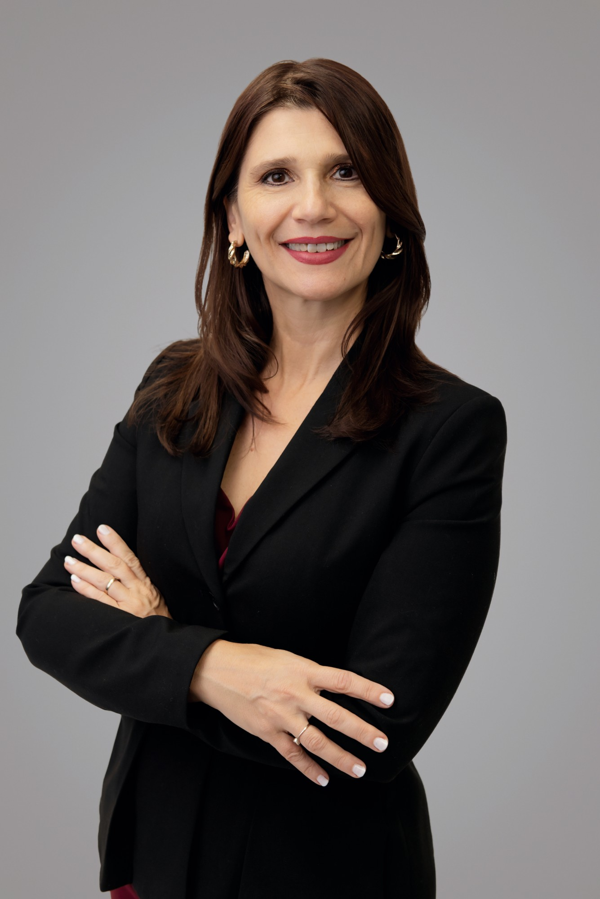
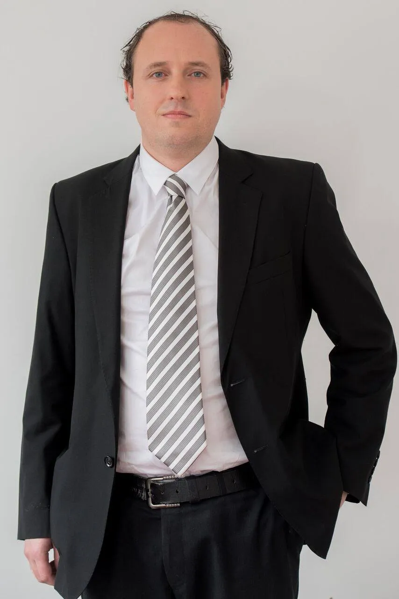
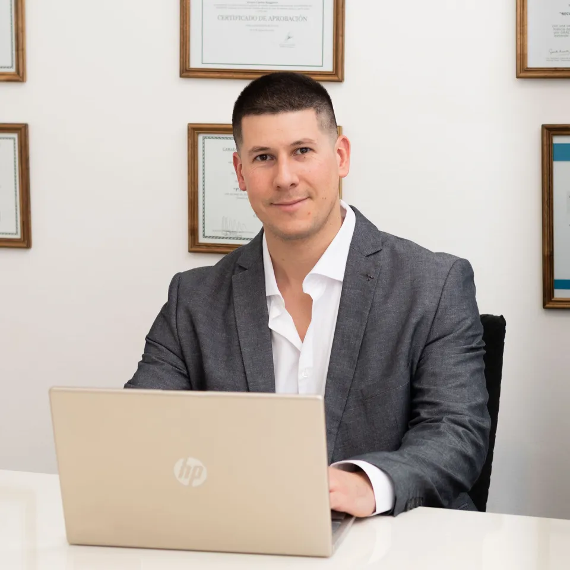

Si usted o un ser querido fue acusado de un delito o vio vulnerados sus derechos, merece una defensa técnica y rigurosa. Somos especialistas en falsas denuncias: más de veinte años defendiendo casos complejos y de alto impacto, con estrategias innovadoras y el respaldo de peritos y expertos en múltiples disciplinas.
No defendemos casos: defendemos personas. Somos especialistas en falsas denuncias, y esto es lo que nos distingue en cada causa que tomamos.
Absoluciones y sobreseimientos en causas que otros daban por perdidas, incluyendo numerosos casos de falsas denuncias.
Vías legales innovadoras y estrategias de defensa adaptadas a cada caso.
Trabajo interdisciplinario con peritos, psicólogos, criminalistas e investigadores para desmontar acusaciones infundadas.
Amplia experiencia en tribunales contravencionales, provinciales, nacionales y federales.
Actuación en todas las instancias: instrucción, etapas intermedias, apelaciones y juicio oral.
Representamos a clientes en todo el país: auditamos causas y acompañamos a colegas de otras jurisdicciones.
La defensa frente a falsas denuncias es nuestra área de mayor especialización: desarrollamos las estrategias necesarias para evidenciar al falso declarante y exponer las contradicciones de la acusación.
Nuestra área de mayor experiencia: defensa frente a denuncias infundadas, maliciosas o injustas, en cualquier fuero.
Simples, agravados, culposos y con pluralidad de autores.
Abuso, acoso, hostigamiento — incluida la defensa ante falsas denuncias en este fuero.
Extorsión, amenazas, privación ilegítima de la libertad.
Estafas y fraudes, simples y complejos.
Tráfico de personas, organizaciones criminales, asociación ilícita.
Falso testimonio, encubrimiento, abuso de poder.
Excarcelaciones, eximiciones de prisión, nulidades e inconstitucionalidades, apelación, casación y extraordinario federal.
Defendemos a las víctimas con determinación, estrategia y compromiso absoluto. Ejercemos la querella asegurándonos de que su voz sea escuchada y de que los responsables enfrenten las consecuencias de sus actos.
Solicitar consulta¿Usted o un ser querido fue acusado de un delito penal o víctima de una falsa denuncia? Identificamos errores en la acusación, inconsistencias en las pruebas y oportunidades para fortalecer su defensa, con pleno respeto al principio de inocencia.
Solicitar consultaNuestra trayectoria nos ha permitido llevar adelante casos emblemáticos que dejaron huella en la justicia argentina, muchos de ellos centrados en desmontar falsas denuncias.
Condena a 50 años de prisión, una de las penas temporales más altas dictadas en el país, en representación de las víctimas.
Absolución de personas acusadas falsamente de delitos transnacionales: un caso paradigmático de nuestra especialidad en falsas denuncias.
Encierro de narcotraficantes y criminales peligrosos retirados de las calles.
Absolución de un padre denunciado por un falso abuso sexual, que estuvo tres años sin ver a su hija. Tribunal Oral N.º 3 de Lomas de Zamora.
Reunión cara a cara para explicar su situación y objetivo. El abogado examina el caso en detalle y le informa todas las opciones a su alcance.
Ponemos en marcha el trabajo, informándole sobre todos los procesos realizados y por realizar. La información le llega de forma directa e inmediata.
Anticipamos cada movimiento del oponente. Preparamos alegatos de apertura y clausura, interrogatorios y contrainterrogatorios.
No nos limitamos a responder acusaciones: desmontamos activamente la narrativa de la contraparte, exponiendo contradicciones e inconsistencias propias de las falsas denuncias.
No prometemos resultados, pero nuestra trayectoria demuestra que sabemos cómo influir de forma decisiva en el desarrollo de un juicio.
Abogados, investigadores y peritos que trabajan estratégicamente en cada etapa del juicio, ante jueces técnicos y jurados populares, con foco especial en la detección de falsas denuncias.
Reconstrucción de hechos, balística y análisis de ADN.
Evaluación de testimonios y detección de falsos testimonios y denuncias infundadas.
Análisis de lesiones y exámenes forenses.
Análisis de datos digitales, cibercrimen y comunicaciones.
Investigación de fraudes y lavado de activos.
Evaluación de sustancias en casos de drogas o intoxicaciones.
Detección de falsificaciones y verificación de autenticidad.
Relevamiento de pruebas y seguimiento fuera del expediente.

Una estratega implacable en la defensa de la justicia.
Abogada penalista con capacitación internacional y más de veinte años de trayectoria en litigios complejos, con formación y actividad académica en Argentina y Estados Unidos. Especialista en la defensa de casos de falsas denuncias, maestra de Juicio Oral y coach de abogados, jueces, fiscales y defensores. Titular del Estudio Jurídico INA, fundado en 2005.
Junto a la Dra. Huczek, el área penal del estudio se apoya en litigantes y en titulares de sede con actuación local en Buenos Aires, La Pampa y Córdoba.

Se graduó como abogado en la Universidad del Salvador con Diploma de Honor (2001) y se especializó en Derecho Penal en la Universidad Austral. Supervisa las causas del estudio en materia penal, contravencional, civil, laboral y migratoria.

Con experiencia previa en expedientes de familia, civil, laboral y contencioso-administrativo, hoy centra su práctica en litigios penales, explicando con claridad las posibilidades reales de cada caso.

Abogado penalista y mediador judicial matriculado, titular de Ruggiero & Asociados en Santa Rosa. Se especializó en litigación oral e interviene en defensa penal compleja y en la representación de víctimas.

Abogado penalista egresado de la Universidad Nacional de Córdoba, con diplomatura en Litigación Oral Penal (UCC) y formación específica en falsas denuncias y delitos de género. Defiende imputados y representa víctimas y querellantes.
«Me reuní con la Dra. Deborah y me asesoró un montón. Se tomó todo el tiempo para explicarme. Excelente profesional.»Estefanía Piano — Reseña en Google
«Muy buena la atención. Clara para explicar y amable. Dan confianza.»Dalma Caceres — Reseña en Google
«Excelentes profesionales y atención, muchas gracias por todo. Altamente recomendables.»Diego Ursi — Reseña en Google